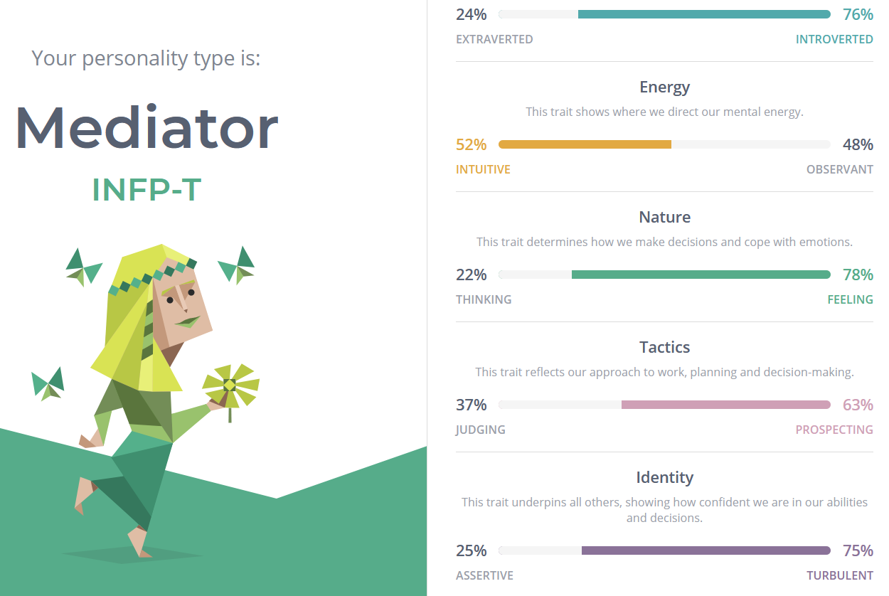
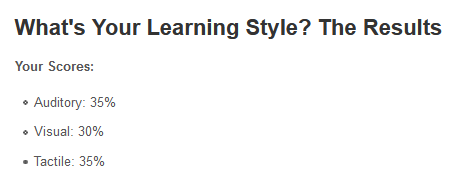
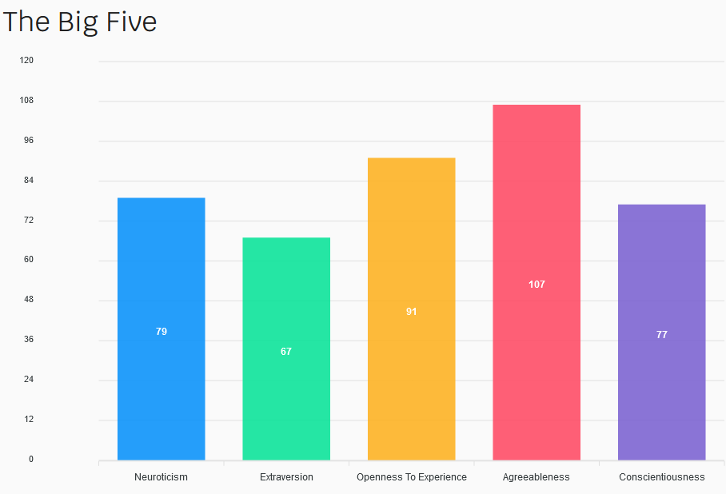

Software Developer - Student
Hi, I am Liam, I have been programming for over 8 years. I am half Australia, Half Canadian.
I started my interest in IT since I was younger. I have been programming since 2012 when I got into Minecraft Modding. I got into modding after playing Minecraft with friends and saw what big servers and modpacks had and were doing. I really wanted to do what other people were doing so I taught myself Java and learnt to make mods, I started out with a very basic mod based off a tutorial that acted like a grenade item, and from there taught myself more complex stuff and have contributed to many other mods. I have been working on commission mods for the past year on and off. I am currently working with friends on trying to make a startup that hosts Minecraft mods and other game mods.
I chose to come to RMIT after trying to find a university that works for, I have done previous study at different universities but never could stay motivated. I was diagnosed with ADHD after I started uni and since then I have found it a lot easier to stay motivated and I have been studying at RMIT for over a year now.
I want to make friends at RMIT and learn more about IT and programming that I have previously never thought about or considered.



The results reflect most of what I am feeling and believe about myself. I will probably take a less leadership part of the team but be someone who completes the work assigned to me. These tests should be used to try and get different opinions and understanding into a team. Having completely different opinions and ideas if you can discuss things correctly can help to complete projects.
The job is a fullstack JavaScript developer and is mainly Node.js based. The job is developing software around game server hosting but there is a lot of side projects that Nodecraft staff develop. The job appeals to me as I have a partnership with Nodecraft for projects I have worked on, and I believe the culture around the company is great. I have some experience with some of the requirements but I don’t believe I would qualify to work there as I don’t have enough.
I currently have experience with Node.js, REST API, Git, VueJS and Docker. But I have no experience with message queues, NoSQL or redis. For me to learn these skills, it would be beneficial to implement them into one of my existing projects, or a project in the future. A lot of these technologies aren’t complex but learning them and being familiar enough to be proficient with them takes time.
A program that connects to third party keyboard/mouse/streamdeck and other third-party devices to create a way to attach macros to it. For example, having a keyboard with macro keys that can be used type a phrase in for you, or to open a web browser to a specific tab.
A lot of manufacturers have their own macro software, this would give a central place to create macros for your hardware and helps to remove limitation on what the manufactures software can do. You can make it interact with something for example an API directly and do something in response, or you could make it change OBS scenes.
The goal of the software is the interact with third party hardware to do what you want in a programable way that is easy to use for users. I also want to be able to setup my own virtual stream deck that can be used on another device or mobile and would allow for clicking buttons on the screen to interact with the computer. The software helps to solve the gap and limitations of existing software being designed for specific hardware by the manufactures as well as the limited actions you can do by using these software’s. Existing software out there you are very limited on what the macro can do, such as it can type out a phrase you want or connected actions to programs such as Discord. For most users this might be the limit to what they need, but for users who want to use their hardware to the fullest it would be useful to implement a way to extend off this and implement a range of different things such as opening websites, fetching the latest weather and reading it out to you, or other actions. Elgato Stream Decks are very useful, and they cover a lot of the required I want to develop, but the software is limited to their own hardware. I want to extend from the Stream deck and implement new actions and hardware that isn’t covered by the device. This could be to add new actions to a MIDI device like a launch pad, or even physical racing pedal that users try to use and innovate using.
You would need to have a physical device such as a keyboard/mouse/streamdeck. USB intercept software such as USBPCap/Wireshark.
I would need to learn about human interface devices as well as understand OBS websockets and communication between the software and a mobile app/website. I need to be able to understand the communication that is being done between the software that is currently in place for devices such as Logitech G Hub and the hardware. As well as implementing the device and sending the required bytes to the device to set it up and use it. I have previously written basic code to interact with a Logitech G105 keyboard, but it was based on existing code so I would need to implement this device in my own software and have it able to do what I require.
The project will help to fill a void in cross hardware support and limitation of current software that interacts with the hardware. It would be opensource and built in a modular way so that you can easily add new devices or connections and thirdparty developers can interact with it too. It would help a lot of streamers or other users who want to use their devices to the fullest.